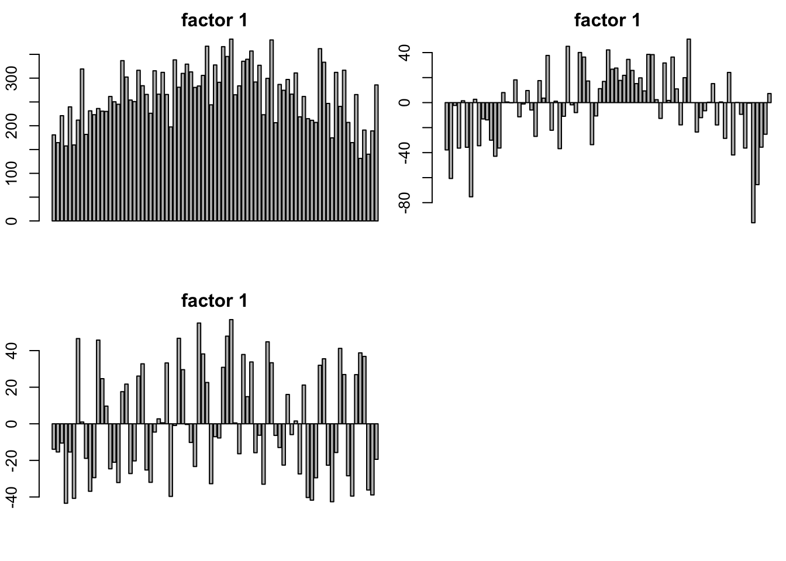
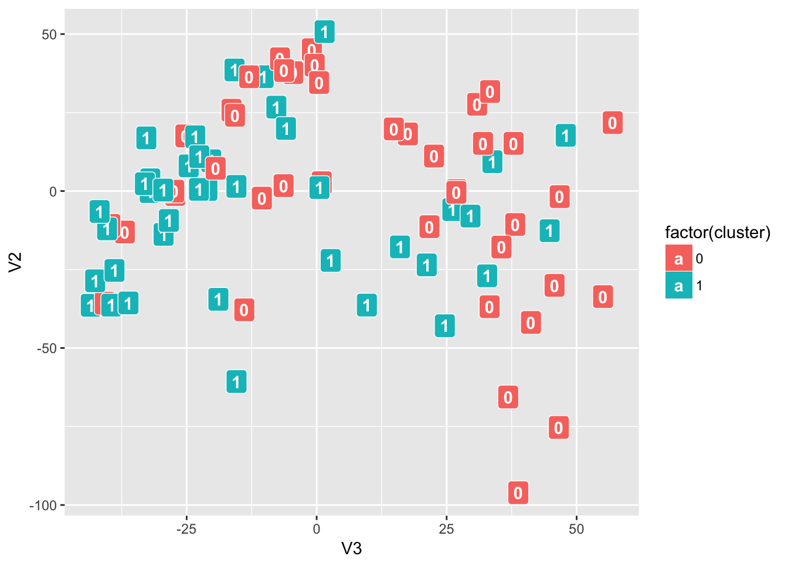

Last updated: 2017-02-08
Code version: 494f306
Try to find the pattern of the missing position from joyce’s data. This a count data with many zeros which are consider as “missing”. I want to find if there is a low rank pattern for the missing positions. So I treat the data as Boolean data which are miss or non-miss. To deal with the Boolean data factor analysis. We can apply Logistic Flash.
library(Biobase)
# Install and load the required library
library(Biobase)
# Load Buettner data
devtools::install_github("jhsiao999/singleCellRNASeqHumanBuettnerTCell")
library(singleCellRNASeqHumanBuettnerTCell)
# Extract expression data
eset <- get(data("HumanBuettnerTCell"))
# The count matrix is 7073 gene by 81 samples
counts <- exprs(eset)
#dim(counts)
# View sample information (these samples were experimentally-determined to be in two functionally-distinct clusters)
#pData(eset)
cluster <- pData(eset)$Cluster
# table(cluster)
Binary_count = 1 * (counts != 0)
Boolean_count = 2*( Binary_count - 1/2)I run Logistic flash (greedy algorithm) with \(K=20\) and it only gives me 3 factors.
source('~/HG/LogisticFlash/Rcode/GD_Rfuncrtions.R')
# MissPattern = GL_flash(Boolean_count,K = 20)
# saveRDS(MissPattern,file = "~/HG/LogisticFlash/data/MissPatternHumanBuettner_K20.rds")
MissPattern = readRDS("~/HG/LogisticFlash/data/MissPatternHumanBuettner_K20.rds")I think I need the name of each cell type or labels for the cell type.
par(mfrow = c(2,2),mar = c(5,4,4,2)-1.9)
barplot(MissPattern$f[,1],main = "factor 1")
barplot(MissPattern$f[,2],main = "factor 1")
barplot(MissPattern$f[,3],main = "factor 1")
I think so. If there is only one factor which is common factor, I thinks it just stand for the common signal or the common missing position. The factor 2 and factor 3 should contain the information of missing pattern.
I don’t know what is the cluster and I guess this should be some useful label for the data. Here I think the factor 2 and factor 3 contains the information of the missing position, so I plot the factor 2 vs factor 3. There is some pattern in this plot. I use the label beacuse I can’t find other labels. :)
I think there is some clustering pattern in the plot, but the cluster might be different from the label cluster in the data. (I don’t know what is cluster.)
library(ggplot2)Warning: package 'ggplot2' was built under R version 3.3.2plot_df_f = data.frame(MissPattern$f)
p <- ggplot(plot_df_f, aes(V3, V2, label = (as.character(cluster) )))
# p + geom_text()
p + geom_label(aes(fill = factor(cluster)), colour = "white", fontface = "bold")
sessionInfo()R version 3.3.0 (2016-05-03)
Platform: x86_64-apple-darwin13.4.0 (64-bit)
Running under: OS X 10.12.3 (unknown)
locale:
[1] en_US.UTF-8/en_US.UTF-8/en_US.UTF-8/C/en_US.UTF-8/en_US.UTF-8
attached base packages:
[1] stats graphics grDevices utils datasets methods base
other attached packages:
[1] ggplot2_2.2.1 workflowr_0.3.0 rmarkdown_1.3
loaded via a namespace (and not attached):
[1] Rcpp_0.12.8 rstudioapi_0.6 knitr_1.15.1 magrittr_1.5
[5] devtools_1.12.0 munsell_0.4.3 colorspace_1.2-6 stringr_1.1.0
[9] plyr_1.8.4 tools_3.3.0 grid_3.3.0 gtable_0.2.0
[13] git2r_0.18.0 withr_1.0.2 htmltools_0.3.5 yaml_2.1.14
[17] lazyeval_0.2.0 rprojroot_1.2 digest_0.6.11 assertthat_0.1
[21] tibble_1.2 memoise_1.0.0 evaluate_0.10 labeling_0.3
[25] stringi_1.1.1 scales_0.4.1 backports_1.0.5 This R Markdown site was created with workflowr